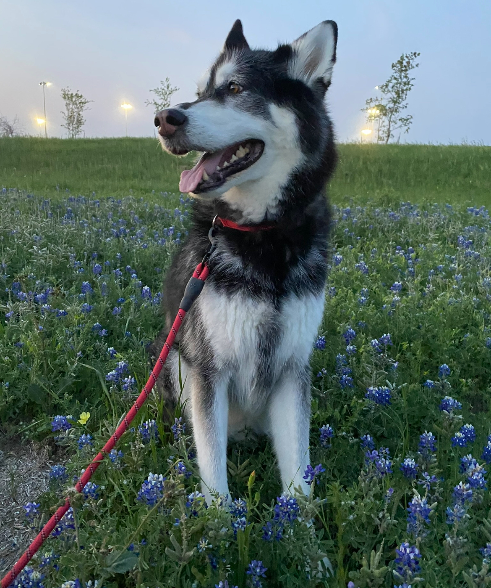
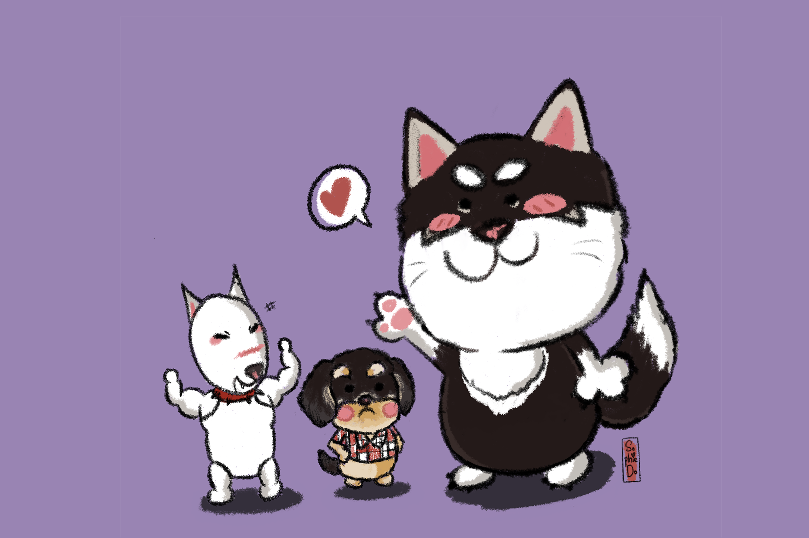
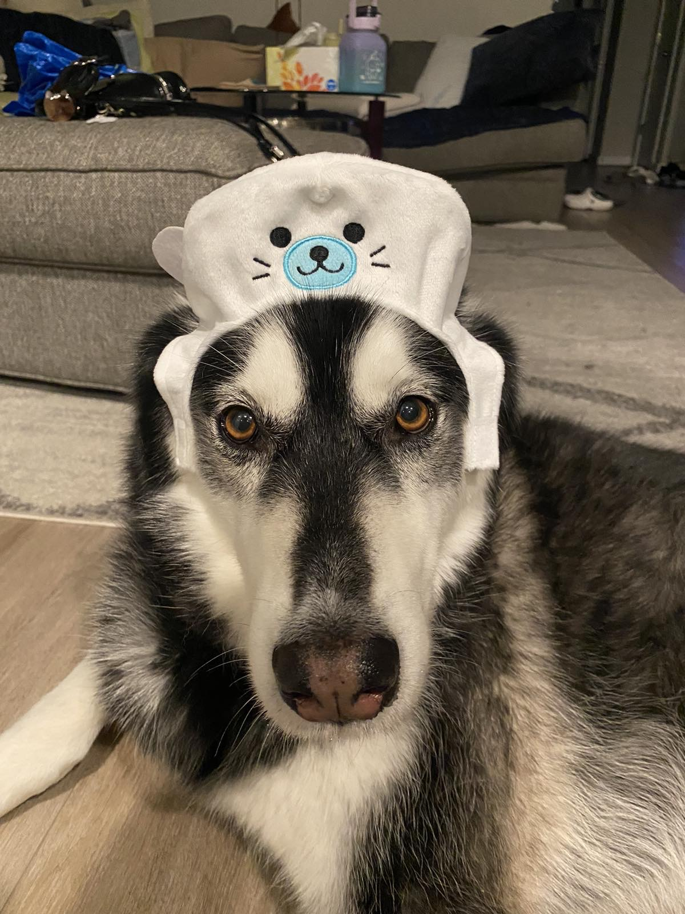
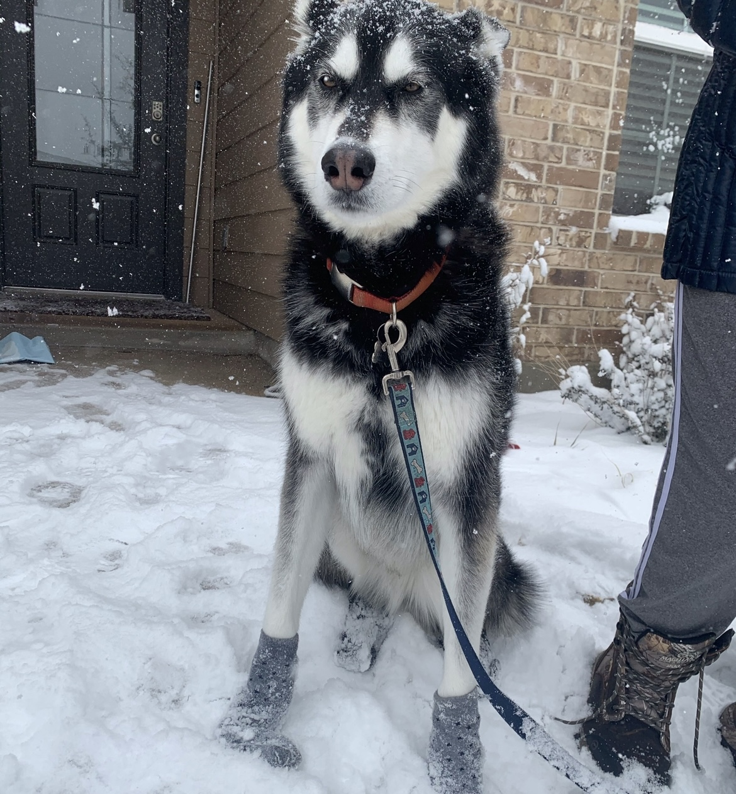
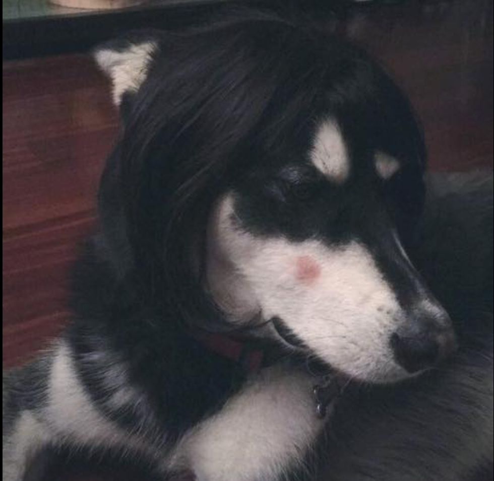
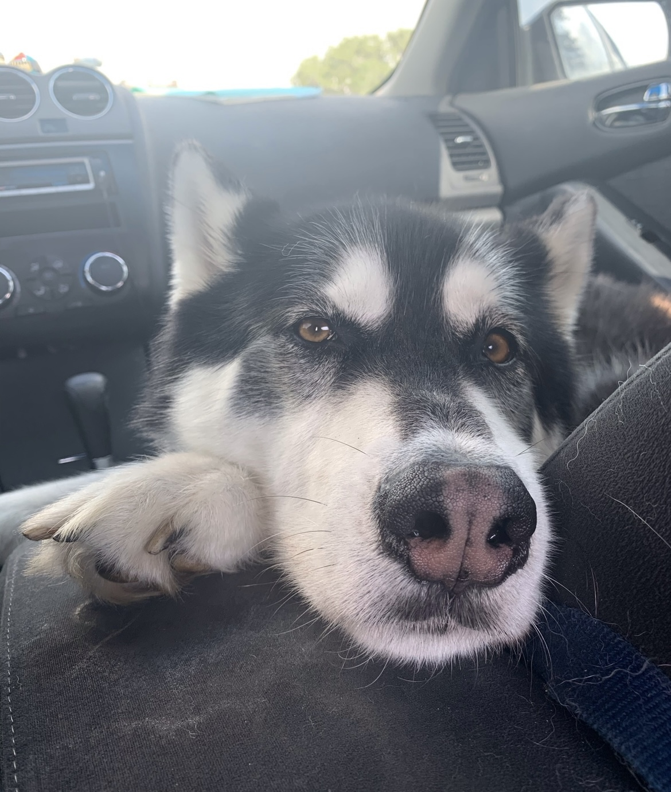
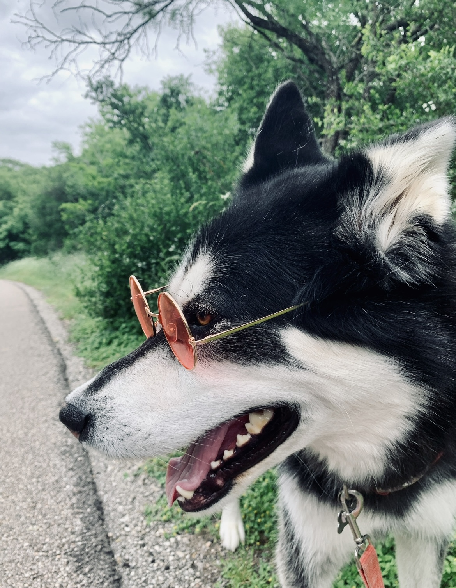
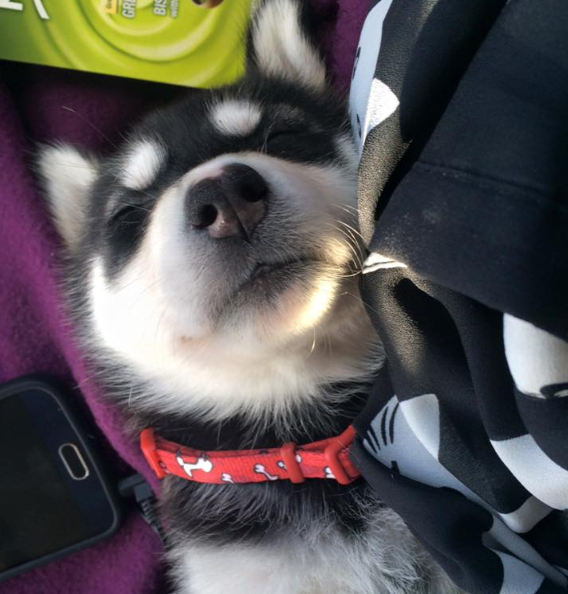

Boba
Boba 
Pet Status
Bread: Husky mixed German Shepherd.
Age: 9.
Favorite Toy: Anything red.
Average Walk Per Day: 30 mins.
Owner Name: Sophie Do.

Boba and friends
Meet Boba, the charming blend of Husky energy and German Shepherd intelligence. With a striking coat that combines the best of both breeds, Boba embodies the adventurous spirit and loyalty characteristic of his heritage. Boba's unique blend of traits makes him an unforgettable presence, captivating hearts wherever he goes. With his striking appearance and irresistible charm, Boba is more than just a mixed breed—he's a testament to the incredible diversity and beauty found in every dog.
Gallery





